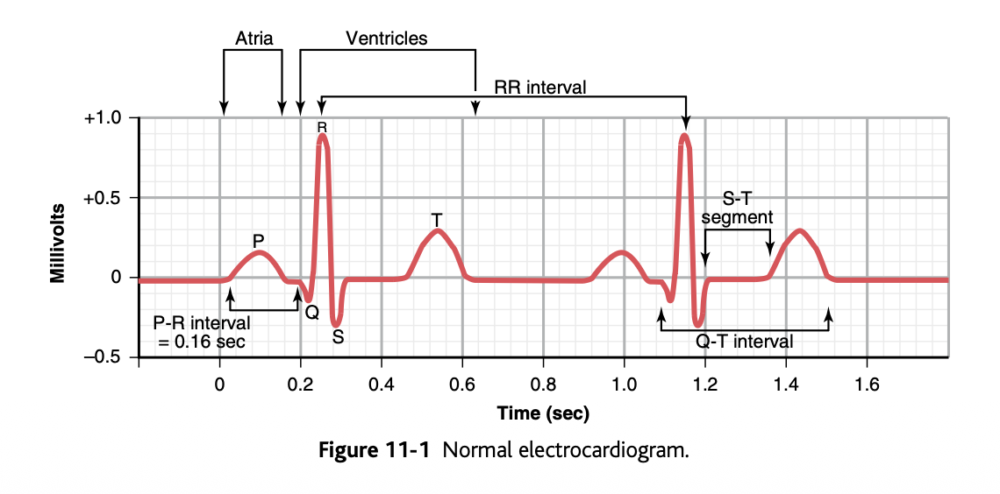
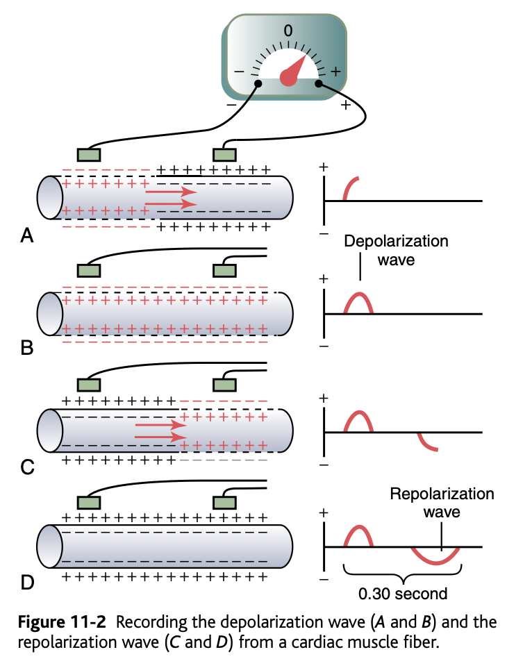
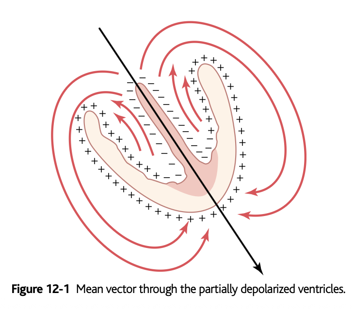
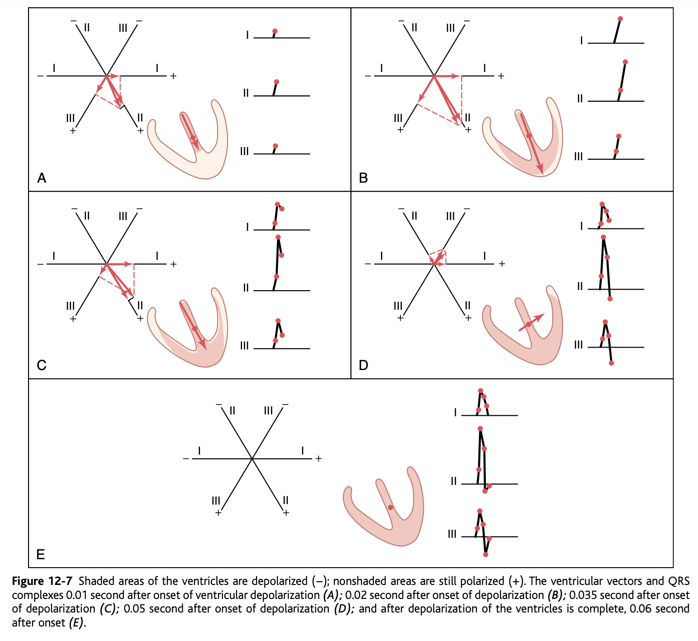
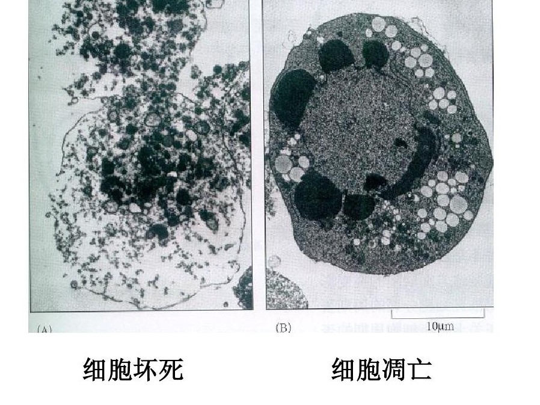
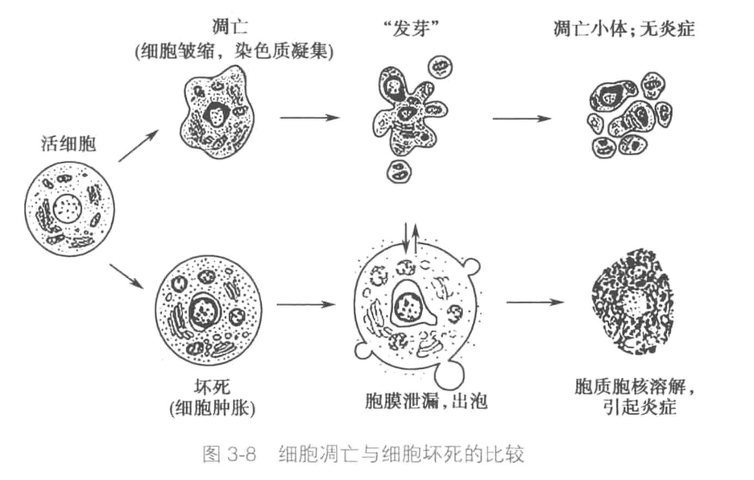

当 R0 = 1.2 时，稳态感染者比例 I* = 0.167 (16.7%)
当 R0 = 2.0 时，稳态感染者比例 I* = 0.500 (50.0%)
当 R0 = 5.0 时，稳态感染者比例 I* = 0.800 (80.0%)学科探究与伦理思考
学科问题探究活动
临床医学
一位因“剧烈胸痛”入院的患者，作为医生，你如何通过一份快速的心电图（ECG）来初步鉴别是危及生命的“急性心肌梗死”还是相对良性的“心绞痛”？
“人工智能”如何能够通过分析患者的医学影像（如 CT、MRI）、电子健康记录甚至基因组数据，来辅助医生进行更早、更精准的癌症诊断和个性化治疗方案的推荐？
心电图
心电图


心电图
冠状动脉性⼼脏病（缺⾎性⼼脏病）
稳定型⼼绞痛
急性冠状动脉综合征
解剖学
为什么供应心脏本身血液的“冠状动脉”一旦堵塞，会比身体其他同等大小的动脉堵塞后果严重得多？
如何利用“3D 生物打印”技术，使用患者自身的细胞，打印出具有复杂内部血管网络、能够移植并存活的功能性器官（如肾脏）？
生理学
在剧烈运动时，我们身体的骨骼肌血管会扩张以增加血流，但同时我们的血压为什么不会骤然下降？
我们能否精确地绘制出大脑中所有神经元连接的地图——即“连接组”？完成这样的图谱将如何彻底改变我们对意识、记忆和神经系统疾病的理解？
病理学
当组织细胞因为缺血（如心肌梗死）或中毒而受损时，它会经历哪两种特征性的程序性死亡方式？如何在显微镜下区分它们？
为什么有些癌症在初始治疗有效后，会进入“休眠”状态，并在多年后“复发”？我们能否通过干预肿瘤微环境来永久维持这种休眠？


药理学
- 为什么服用某些他汀类降脂药时需要避免同时食用葡萄柚？
- 如何设计一种“靶向递送系统”，让抗癌药像“智能导弹”一样，只精准地识别并进入癌细胞，而不伤害正常细胞？
神经科学
请阐述动作电位到达轴突末梢后，触发神经递质释放的精密级联过程。这一过程为何对细胞内的钙离子浓度具有高度依赖性？
“意识”的神经相关物是什么？我们能否通过研究大脑不同区域和网络的活动，来客观地测量一个存在严重沟通障碍（如植物人）患者的意识水平？
免疫学
* 为什么人类能研发出高效的新冠mRNA疫苗，却历经数十年仍无法研发出有效的艾滋病（HIV）疫苗？
- 除了直接杀死癌细胞，我们如何“解除”肿瘤对免疫细胞的“刹车”，让患者自身的免疫系统重新识别并攻击肿瘤？
遗传学
一个孩子的血型是 O 型，其母亲是 A 型，父亲是 B 型。这从遗传学上讲是否可能？ABO 血型系统背后的生化、分子生物学基础？什么是 SNP？
CRISPR 基因编辑技术有望治愈由单基因突变引起的遗传病（如镰状细胞贫血），但我们如何确保编辑的精准性，避免“脱靶”效应带来的长期风险？
流行病学
如何通过计算来判断一种传染病（如新型冠状病毒）的传播能力？这个关键指标是什么？
如何整合个人的基因组数据、临床记录和环境暴露数据（“暴露组”），来预测一个人未来患慢性病（如糖尿病）的风险，而不仅仅是依赖群体层面的风险因素？
传染病模型
SI
\(S \xrightarrow{\beta IS} I\)
SIS
\(S \xrightarrow{\beta IS} I \xrightarrow{\gamma I} S\)
SIR
\(S \xrightarrow{\beta IS} I \xrightarrow{\gamma I} R\)
SI

SIS
SIR

R0
R0模拟结果（100次模拟，5代传播）： R0 Mean_Cases SD_Cases Prob_Extinction
1 0.5 1.86 1.608186 0.99
2 1.0 6.07 7.322658 0.77
3 1.5 21.77 22.788822 0.43
4 2.0 67.99 62.093038 0.16
5 3.0 389.45 230.674346 0.02血液学
为什么缺铁会导致贫血，并且红细胞在显微镜下会呈现“小细胞低色素性”的特点？
基于 mRNA 的技术在成功应用于疫苗后，能否被用来治疗血红蛋白病，如镰状细胞病和地中海贫血？
血液学
- 为什么缺铁会导致贫血，并且红细胞在显微镜下会呈现“小细胞低色素性”的特点？
- 基于 mRNA 的技术在成功应用于疫苗后，能否被用来治疗血红蛋白病，如镰状细胞病和地中海贫血？
血液学
为什么缺铁会导致贫血，并且红细胞在显微镜下会呈现“小细胞低色素性”的特点？
基于 mRNA 的技术在成功应用于疫苗后，能否被用来治疗血红蛋白病，如镰状细胞病和地中海贫血？
血液学
为什么缺铁会导致贫血，并且红细胞在显微镜下会呈现“小细胞低色素性”的特点？
基于 mRNA 的技术在成功应用于疫苗后，能否被用来治疗血红蛋白病，如镰状细胞病和地中海贫血？
血液学
为什么缺铁会导致贫血，并且红细胞在显微镜下会呈现“小细胞低色素性”的特点？
基于 mRNA 的技术在成功应用于疫苗后，能否被用来治疗血红蛋白病，如镰状细胞病和地中海贫血？
肿瘤学
根据“肿瘤多阶段发生模型”，一个正常细胞需要积累哪些关键类型的基因突变，才能最终发展成恶性肿瘤？
为什么有些癌细胞会对最初非常有效的靶向药物产生“耐药性”？我们能否预测并克服这种耐药性？
器官移植学
在进行器官移植前，为什么供者和受者必须进行“组织配型”？其中最重要的基因位点是什么？
我们能否通过基因编辑技术“敲除”供体猪器官中引起人体超急性排斥反应的关键基因，并“敲入”一些人源化基因，从而创造可用于移植的“异种器官”？
器官移植学
- 在进行器官移植前，为什么供者和受者必须进行“组织配型”？其中最重要的基因位点是什么？
器官移植学
- 在进行器官移植前，为什么供者和受者必须进行“组织配型”？其中最重要的基因位点是什么？
口腔医学
牙菌斑生物膜是如何通过其高度结构化的“社区”生活模式，增强其对牙齿表面的附着力、抵抗漱口等机械性清除，并提升其致龋齿能力的？
口腔中的特定致病菌（如牙周炎的牙龈卟啉单胞菌）是否与远隔器官的疾病（如阿尔茨海默病、心血管疾病）存在因果关系？其背后的机制是什么？
皮肤病学
白癜风患者的皮肤上为什么会出现一片片完全的色素脱失？
基于 mRNA 的个体化肿瘤疫苗能否用于治疗晚期黑色素瘤？它是如何起效的？
微生物学
为什么滥用抗生素会可能导致艰难梭菌感染引起的严重腹泻？
如何通过改变一个人的“肠道菌群”组成（例如通过粪便微生物移植、特定益生元或益生菌）来治疗甚至逆转像 2 型糖尿病或自闭症谱系障碍这样的慢性疾病？
生物化学
剧烈运动后肌肉酸痛的主要原因是什么？请解释其生化通路。
我们能否设计一种全新的、自然界不存在的生化反应通路，并将其植入微生物，让其利用二氧化碳和太阳能高效地生产生物燃料？
系统生物学
* 在系统生物学中，如何用一个简单的线性方程 Ax = b 来抽象地表示一个生物系统（如一个微小的代谢通路）？请阐述方程中矩阵 A 和向量 x, b 分别代表什么生物学含义。
* 如何利用“单细胞测序”技术，通过分析细胞群体的基因表达数据，来推断调控细胞命运决定（如干细胞分化为特定类型细胞）的基因调控网络？
生物信息学
科学家如何从一个人的基因组 DNA 序列中，快速找出所有可能编码蛋白质的基因？
如何仅通过分析一个肿瘤细胞的基因组序列，来预测它对某种特定化疗药物或靶向药的敏感性？
营养学
为什么摄入相同热量的糖（如果糖）和全谷物（如燕麦），后者对血糖水平的影响更平缓，饱腹感更强？
“精准营养”是否可能？即根据一个人的基因组成、肠道菌群特征和代谢状态，为其定制独一无二的、最有益健康的膳食方案？
运动医学
为什么优秀的马拉松运动员和短跑运动员拥有截然不同的体型和肌肉类型？他们的身体主要依赖哪种能量供应系统？
如何利用基因技术或生物标志物来预测一个年轻运动员发生运动性猝死（如肥厚型心肌病）或特定类型运动损伤（如前交叉韧带撕裂）的风险？
结构生物学
青霉素等抗生素是如何通过特异性地抑制细菌细胞壁的合成，而不伤害人体细胞，从而实现“精准打击”的？
如何设计一个全新的、自然界不存在的蛋白质，使其能够像“分子机器”一样精准地执行特定任务（如降解塑料、中和病毒）？
合成生物学
科学家是如何让大肠杆菌这种细菌来生产人类胰岛素的？
我们能否设计一个完整的合成基因组，创建一个由人工设计基因组控制的、能够执行复杂任务（如检测并降解环境毒素）的“人造细胞”？
医学伦理学
在药物临床试验中，为什么设置“安慰剂对照组”是必要的？当存在已证实有效的标准疗法时，使用安慰剂是否符合伦理？
当基因编辑技术（如 CRISPR）可用于修改人类生殖细胞（精子、卵子或胚胎），从而永久改变后代基因时，我们面临着哪些不可逆的社会和伦理风险？治疗的边界在哪里？
循证医学
在评价一种新药的疗效时，为什么“大规模随机双盲对照试验”提供的证据等级远高于“医生个人的临床观察”？
当面对患有多种合并症、同时服用多种药物的老年患者时，如何将“基于群体的平均证据”与“基于个体的真实世界数据”相结合，做出最适合这个独特患者的临床决策？
科学哲学
一个科学理论（如“细菌致病论”）和一个非科学论断（如“星座决定性格”）最根本的区别是什么？
在像弦理论这样的物理学前沿，以及某些复杂的心理学领域，理论所描述的实体或过程可能永远无法被直接观测，其预测也难以在短期内被检验。那么，我们应如何判断这些理论是“科学”的，还是纯粹的数学猜想或哲学思辨？
伦理问题
生命的边界与干预的权限
一位有亨廷顿舞蹈症家族史的成年人，进行了基因检测，但获知结果前又改变主意，表示不想知道自己的基因命运。但结果表明他带有致病基因，他的子女未来有 50%的几率患病。医生是否有义务告知其子女这一风险？这侵犯了这位父亲的什么权利？
（可选）随着 CRISPR 等基因编辑技术的发展，我们未来很可能能够“消除”某些遗传病。但当技术允许我们进行“基因增强”（如提升智力、身高）时，我们应如何划清“治疗”与“增强”的伦理边界？这是否会导致新的社会不公，即“基因富人”与“基因穷人”的阶级固化？
数据与身体的产权归属
一位患者的肿瘤组织样本在手术后用于科学研究，并最终帮助开发出一种年销售额数十亿美元的抗癌新药。这位患者是否有权从中获得经济补偿？为什么？
（可选）在数字医疗时代，你的健康数据（基因组、电子病历、可穿戴设备记录）具有巨大的研究和商业价值。谁应该“拥有”并控制这些数据？如何在推动公共健康与科学研究的同时，确保个人的数据隐私和自主控制权不被侵犯？
生命的起点与终点定义
在辅助生殖技术中，通常会创造多个胚胎，但仅植入少数。剩余的胚胎可以被冷冻、用于研究、捐赠给他人，或被销毁。从伦理角度看，应如何对待这些“多余的”胚胎？什么是Savior Siblings？
（可选）随着“脑死亡”成为医学和法律上判定死亡的标准，以及器官移植需求的上升，我们应如何确保在宣布脑死亡并获取器官的过程中，绝对排除了任何误判或存在残余意识的可能？生命维持技术能够长期维持一个“无脑”的躯体，这对我们关于死亡本质的理解意味着什么？
资源分配的正义
在突发公共卫生事件（如大流行）中，ICU 床位和呼吸机等医疗资源极度稀缺。应该依据什么原则来分配这些救生资源？是先到先得，还是救治成功率最高者，抑或是优先照顾医护人员？
（可选）一些极其昂贵的“神奇药物”（如某些基因疗法）能够治愈罕见病，却会耗尽公共医保基金，从而减少对更多患者的基础医疗服务。医疗系统是否有义务覆盖这些高额疗法？我们应如何在“健康效益最大化”与“救助每一个生命”的伦理义务之间取得平衡？
人与技术的融合边界
一位因脊髓损伤而瘫痪的患者，通过脑机接口可以用“意念”控制机械臂。当这个机械臂意外造成他人伤害时，法律责任应该由患者、医生还是设备公司承担？
（可选）如果未来的脑机接口技术不仅能解读运动意图，还能读取甚至修改人的记忆、情绪和信念，我们该如何定义“自我”与“自由意志”？这类技术是否只能用于治疗，还是可以用于增强常人的认知能力？它会对人类尊严与人格同一性构成怎样的根本威胁？